Animating Arbitrary Objects via Deep Motion Transfer
Aliaksandr Siarohin, Stéphane Lathuilière, Sergey Tulyakov, Elisa Ricci and Nicu Sebe
Abstract
Spotlight video
How does it work?
The output video is generated frame-by-frame as illustrated in Figure above (left). At time t, our proposed neural network the Monkey-Net uses the source image and the tth frame from the driving video. In order to train a Monkey-Net one just needs a dataset consisting of videos of objects of interest. No specific labels, such as keypoint annotations, are required. The learning process is fully self-supervised. Therefore, at test time, in order to generate a video sequence, the generator requires only a static input image and a motion descriptor from the driving sequence.
The Monkey-Net architecture is illustrated in Figure above (right).
Let x and x' be two frames of size extracted from the same video. We jointly learn a keypoint detector together with a generator network according to the following objective: generator should be able to reconstruct x' from the keypoint locations and x. In this formulation, the motion between x and x' is implicitly modeled.
To deal with large motions, we aim to learn keypoints that describe motion as well as the object geometry. To this end, we add a third network that estimates the optical flow between
The motivation for this is twofold. First, this forces the keypoint detector to predict keypoint locations that capture not only the object structure but also its motion. To do so, the learned keypoints must be located especially on the object parts with high probability of motion. For instance, considering the human body, it is important to obtain keypoints on the extremities (as in feet or hands) in order to describe the body movements correctly, since these body-parts tend to move the most. Second, following common practises in conditional image generation, the generator is implemented as an encoder-decoder composed of convolutional blocks. However, standard convolutional encoder-decoders are not designed to handle large pixel-to-pixel misalignment between the input and output images. To this aim, we introduce a deformation module within the generator that employs the estimated optical flow in order to align the encoder features with x'.
Learned keypoints
| 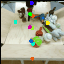 |  | 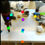 | 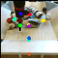 | 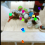 | 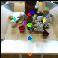 | 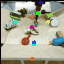 | 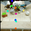 | 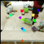 | 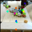 | 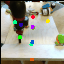 | 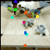 |
| 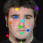 | 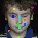 |  | 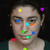 | 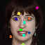 | 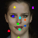 | ||||||
| 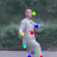 |  | 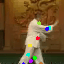 | 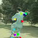 | 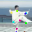 | 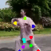 | 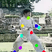 | 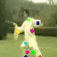 | 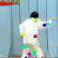 | 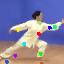 | 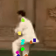 |  |
| 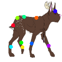 | 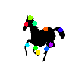 | 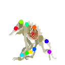 | 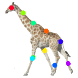 | ||||||||
Citation
@article{siarohin2018animating,
title={Animating Arbitrary Objects via Deep Motion Transfer},
author={Siarohin, Aliaksandr and Lathuilière, Stéphane and Tulyakov, Sergey and Ricci, Elisa and Sebe, Nicu},
journal={arXiv:1812.08861},
year={2018}
}